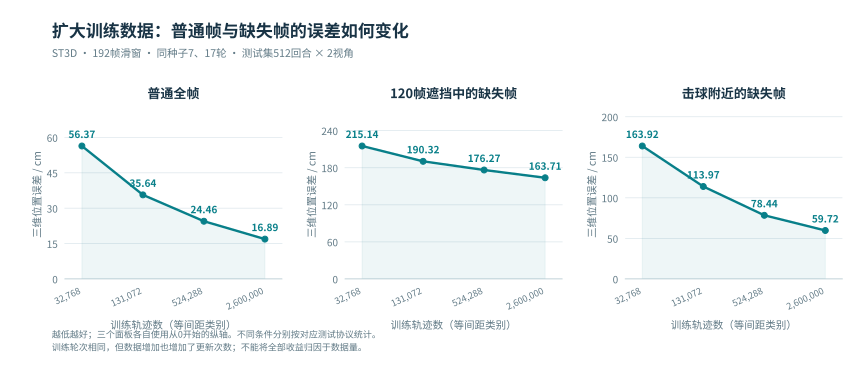
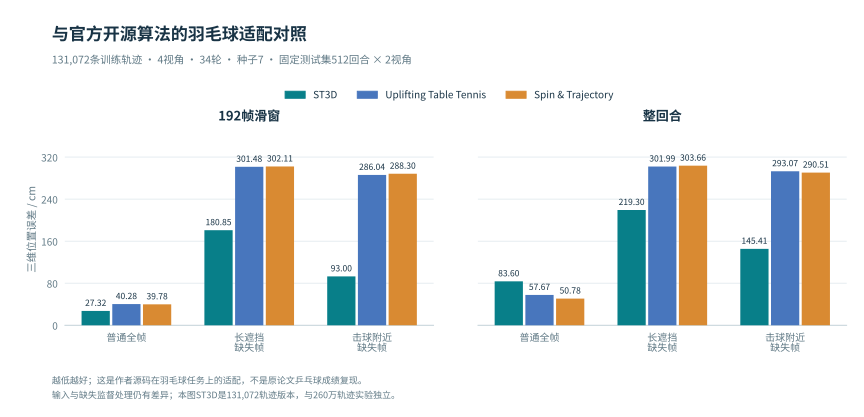
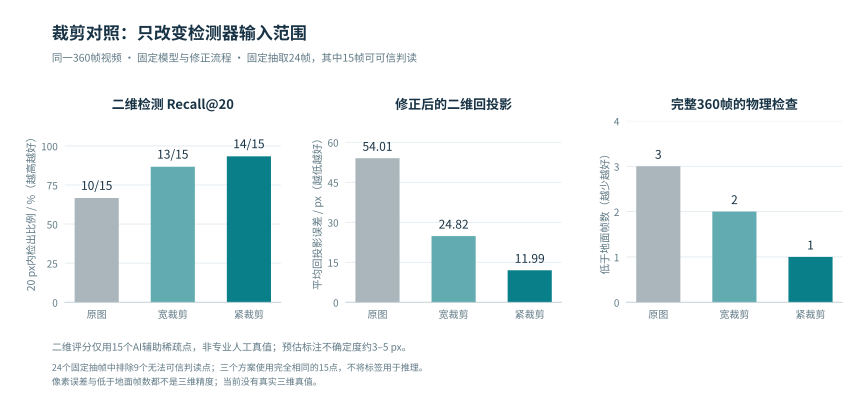
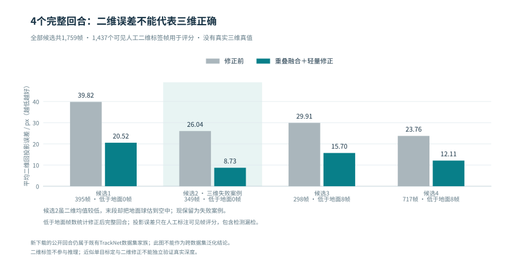
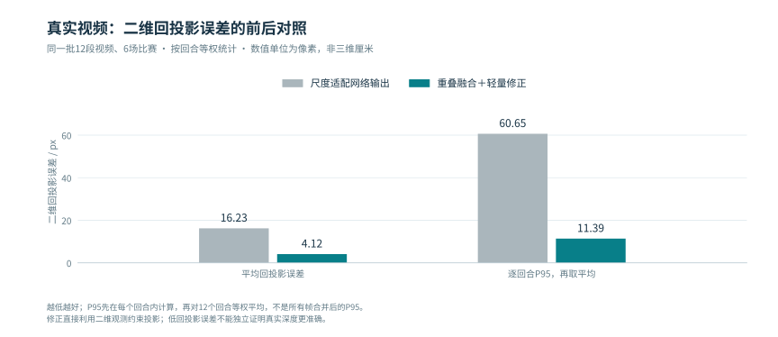
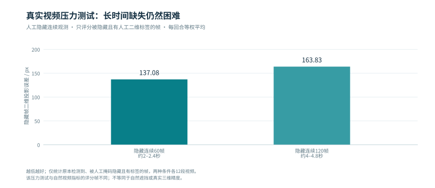
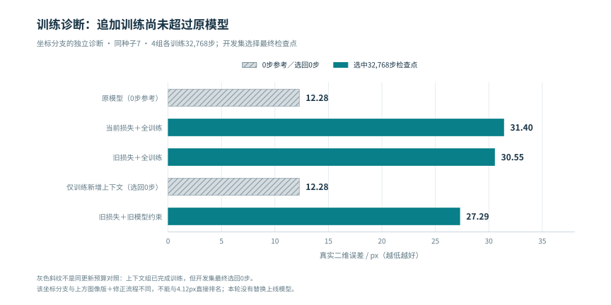

已完成
- 数据扩至260万轨迹，比较48帧、192帧、整回合和多轮推理。
- 接通真实检测、标定、三维估计与同步可视化。
- 完成官方方法适配及图像、曝光、注意力/MLP、解冻和出画状态等对照。
ST3D · 研究汇报 · 2026.11.06
ST3D: Monocular 3D Shuttlecock Trajectory Reconstruction with Appearance and Temporal Cues
融合二维位置、局部外观与时间信息，研究遮挡、漏检和击球附近的空间重建。主效果展示采用有三维真值的仿真；真实视频尚未通过空间合理性检查，下方作为失败案例分析。
参数总数 1,929,971，不含二维检测器。输入容器为47维；原模型显式清零相机内外参的16维槽，网络使用二维球场点。时间进入 RoPE，padding 与可见性决定注意力掩码。图像卷积层间使用 GELU。真实演示中的几何修正属于网络之后的步骤。
当前是离线重建：可利用后续帧。训练、推理和计时均在 RTX 5090 主机上完成；下方包含仿真验证、新公开回合与侧拍裁剪对照。
01 / 有三维真值的仿真验证
三栏使用同一个时间轴：第一栏看无标记的原始内容，第二栏看保存的二维观测，第三栏查看三维重建。拖动右侧场景即可旋转，也可切换侧视、俯视和缩放。
仿真没有保存完整原始视频：首栏球场与白球是同一相机下的场景示意，角落的24×24灰度图才是保存的实际输入；第二栏使用预生成的观测和热图，不冒充重新检测。三维部分直接绘制逐帧XYZ，支持自由转动，播放按原始30fps时间轴同步。单例不代替下表全测试集。

| 训练轨迹 | 普通全帧 / cm | 120帧遮挡缺失帧 / cm | 击球附近缺失帧 / cm |
|---|---|---|---|
| 32,768 | 56.37 | 215.14 | 163.92 |
| 131,072 | 35.64 | 190.32 | 113.97 |
| 524,288 | 24.46 | 176.27 | 78.44 |
| 2,600,000 | 16.89 | 163.71 | 59.72 |
同种子7、17轮；固定512条测试回合×2视角；均为192帧滑窗，按对应测试协议等权统计。数据量增加也增加了更新次数，不能将改善全部归因于数据量。

| 上下文 | 方法 | 普通全帧 / cm | 长遮挡缺失帧 / cm | 击球附近缺失帧 / cm |
|---|---|---|---|---|
| 192帧窗口 | ST3D | 27.32 | 180.85 | 93.00 |
| 192帧窗口 | Uplifting Table Tennis | 40.28 | 301.48 | 286.04 |
| 192帧窗口 | Spin & Trajectory | 39.78 | 302.11 | 288.30 |
| 整回合 | ST3D | 83.60 | 219.30 | 145.41 |
| 整回合 | Uplifting Table Tennis | 57.67 | 301.99 | 293.07 |
| 整回合 | Spin & Trajectory | 50.78 | 303.66 | 290.51 |
本表是另一个独立协议：131,072条训练轨迹、4视角、34轮、种子7，固定512条测试回合×2视角。这里的ST3D不是上表260万训练版本，不能跨表拼成同预算排名。
结论：192帧窗口和缺失恢复中，ST3D误差更低；整回合普通定位中，两个官方网络更准。它们是作者源码在羽毛球任务上的适配，输入与缺失监督处理仍有差异，不能称为原论文乒乓球成绩复现。
MonoTrack使用官方重建核心，但球员姿态和击球端点条件不同，需独立解释。多目参考使用额外相机及标定，与单目不作同输入排名。早期2048训练回合、6配置×3种子对照中，整回合图像A相对同上下文坐标基线的重点缺失误差降低约7.3%，但仍比192帧图像A高约2.0%。
02 / 真实视频验证 · 11月5日实验 · 11月6日更新
末尾11.60秒，原片中的球已在远端底线附近地面上；模型却给出近侧半场、离地2.84米的位置。这一空间矛盾可以直接从原片与三维位置的对照看出。此前仅依据较低二维误差和“未低于地面”选用此片段，验收依据不充分，现撤回“效果较好”的判断。
主效果展示请看有三维真值的仿真 → 下方真实回放用于检查问题，不能作为三维重建成功的证据。
保留斜后方固定机位的全部349帧及原预测坐标，便于直接对照错误。该末帧原网络就已输出2.76米高度，修正后为2.84米，错误不是网页旋转造成的。二维观测较准确，仍可能得到错误的深度；“落地、静止、回合结束”的状态也尚未被可靠处理。
来自 Shuttlecock Trajectory Dataset（TrackNet） 的 Test/match1/1_06_03。沿用冻结检测器、ST3D与既有重叠融合/轻量修正；标签仅作评分。本回合8.73px只是二维平均值，不能抵消末段显著的空间错误。当前没有实测三维真值可给出精确三维误差，但画面中的落地与输出悬空已足以判定此结果不合格。
有用。对同一侧拍原片先保留目标球场和上方飞行空间，再送入检测器；识别坐标随后映射回同一相机。模型、360帧、异常点规则和后续修正均保持不变，改善不是靠隐藏显示点。

| 输入画面 | 裁剪宽×高 | 20px内命中 | 回投影均值 / px | 低于地面 / 帧 |
|---|---|---|---|---|
| 原始全画面 | 1280×720 | 10 / 15 | 54.01 | 3 |
| 较宽裁剪 | 1024×576 | 13 / 15 | 24.82 | 2 |
| 聚焦目标球场 | 896×504 | 14 / 15 | 11.99 | 1 |
原分辨率1280×720；较宽裁剪从(64,32)起，聚焦裁剪从(128,72)起，均按16:9缩放后重新检测。所有误差映射回原始像素坐标计算。
固定抽取24帧，由未查看预测的AI辅助目视辨认；15个球心可确认、9帧不确定而排除，位置容差约3–5px。这是稀疏诊断，非专业人工真值，也不是整段精度。回投影54.01→11.99px约降低77.8%，但聚焦裁剪后仍有1帧估计到地下，尚不足以作为可靠三维结果。
在推理前固定4个未使用过的回合，共1,759帧。用同一组冻结权重和流程处理，保存预测后再读取人工二维球坐标评分。

| 候选 | 总帧数 | 20px内检测命中 | 网络输出 / px | 修正后 / px | 修正后P95 / px | 低于地面 / 帧 |
|---|---|---|---|---|---|---|
| 候选1 | 395 | 92.0% | 39.82 | 20.52 | 132.73 | 0 |
| 候选2 · 失败回放 | 349 | 92.4% | 26.04 | 8.73 | 16.73 | 0 |
| 候选3 | 298 | 86.1% | 29.91 | 15.70 | 84.86 | 8 |
| 候选4 | 717 | 93.6% | 23.76 | 12.11 | 38.34 | 8 |
每行回投影统计该回合所有有可见人工标签的帧，含检测漏掉的帧；单位为原图像素。4段合计1,437个可见标注帧，汇总误差28.86→13.80px，但修正后仍有16帧低于地面，发生于候选3、4。不能把所选单例8.73px当作全部数据成绩。
数据边界：这里新增的是TrackNet数据集家族中的回合，并非全新的独立数据集；检测器预训练是否见过这些视频尚不明确。不同机位、不同标签密度的两条路线不可直接排成精度榜。侧拍本身没有保证更准，干净画面和较准二维观测仍不足以保证空间重建正确。
以下数字来自原固定转播机位基准（6场比赛、6,405帧），不是上方当前展示片段的精度。

| 同一批12段真实视频 | 尺度适配网络输出 | 重叠融合＋轻量修正 |
|---|---|---|
| 平均回投影误差 | 16.23 px | 4.12 px |
| 逐回合 P95 再平均 | 60.65 px | 11.39 px |
4.12像素不是三维厘米误差。它衡量三维估计投回图像后与人工标注的距离。几何修正直接利用二维观测约束投影，因此低投影误差不能独立证明深度更准。当前没有同步真实三维真值。

| 长缺失压力测试 | 当前隐藏帧投影误差 | 解释 |
|---|---|---|
| 人工删除连续60帧 | 137.08 px | 约2–2.4秒无输入 |
| 人工删除连续120帧 | 163.83 px | 约4–4.8秒无输入 |
长缺失指标仅统计有人工标签、原本检测到且被人工掩码隐藏的帧。它们是压力测试，不能等同于自然长遮挡的真实三维验证。固定广播机位和已有检测器数据覆盖也限制泛化结论。
03 / 研究进展、局限与下一步

| 方案 | 选中更新步 | 真实二维误差 / px |
|---|---|---|
| 原模型（0步参考） | 0 | 12.28 |
| 当前损失＋全训练 | 32768 | 31.40 |
| 旧损失＋全训练 | 32768 | 30.55 |
| 仅训练新增上下文 | 0 | 12.28 |
| 旧损失＋旧模型约束 | 32768 | 27.29 |
4组从同一坐标父模型出发，每组32,768更新、2轮、种子7。64条全新物理测试轨迹×2视角×7条件；12段真实视频重复用于诊断。这里的坐标分支及推理流程与上方4.12px的图像版＋修正不同。0步参考不是同更新预算对照；仅训练上下文确实训练完成，但开发集最终选回0步。
旧损失与旧模型约束将这一诊断中的真实误差从30.55降至27.29px，仍差于其原模型12.28px。因此没有部署为新的真实重建模型；“页面更新”与“模型精度提升”分别判断。
16,384条物理轨迹×2观测、每组32,768步、种子7的曝光对照中，正常三维误差：坐标控制20.39cm，理想拖影＋曝光约束20.37cm，预测拖影＋曝光约束20.64cm。当前不足以证明拖影带来稳定增益。MiTA启发模块和快权重也未普遍超过同样解冻的普通Attention；这是机制适配研究，不是官方原任务复现。
另外28次双种子小样本数据/结构训练，边界/相机模块与缺失帧解码头均未达到上线门槛。全部结果与未更新检查点保留在研究档案。
7组各131,072更新、8轮、种子7的独立对照中，状态Macro-F1约0.951→0.991；真实已标注可见帧被误判为出画的比例约8.39%→0.12%。但人工确认的自然出画只有1段23帧，不能推广到任意真实缺失。
一般出画三维误差仅约1.1%的改善，配对区间跨0；有画外假检测的压力场景改善约6.5%。正常段有退化，4–8秒长出画样本不足；最新更窄视野≥8秒条件仍约2.8m。
本页每张表沿用其独立实验协议，数值单位、训练量、上下文及模型版本分别标明。所有视频均为已有实际预测的回放，没有用生成式画面替代结果。仿真二维场景只是将同一相机几何与三维标签投影出来，网络实际输入仍是局部像素。
真实训练与测试可能共享检测器所见数据。TT3D乒乓球多目数据是候选验证途径，尚不能代替羽毛球真实三维验证。原始日志、权重、数据和历史页面备份保留在项目归档中；本站仅保留这一份最新版汇报。